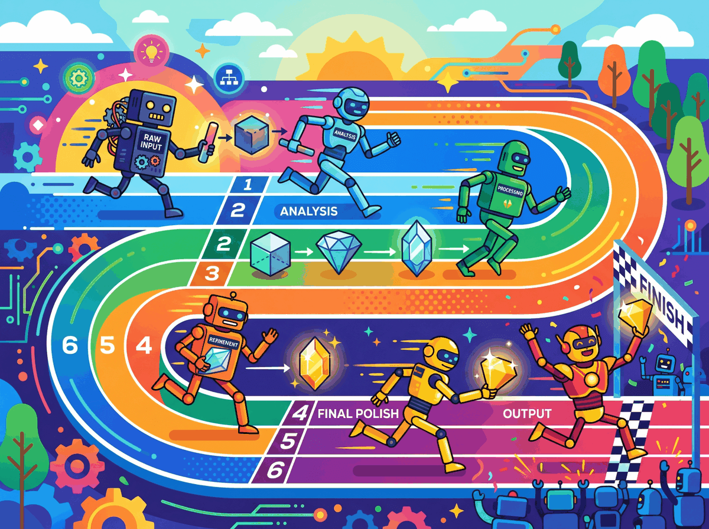

"I asked the model to improve its own prompt. It did. Then it improved the improvement. I am now unemployed."
Prompt, Self-Improving AI Agent
From manual craft to automated optimization. Sections 11.1 and 11.2 covered techniques you write by hand: few-shot examples, role prompts, chain-of-thought templates. This section moves beyond manual prompt design into patterns that let LLMs improve their own outputs (reflection), generate new prompts (meta-prompting), and optimize prompt pipelines programmatically (DSPy, OPRO). These techniques represent the frontier where prompt engineering becomes prompt programming, shifting from artisanal tuning to systematic, reproducible optimization.
The trajectory of prompt engineering mirrors the trajectory of machine learning itself: from hand-crafted features (manual prompts) to learned representations (optimized prompts). DSPy, OPRO, and APE are the prompt engineering equivalents of AutoML, hyperparameter search, and neural architecture search. As the field matures, we expect most production prompts to be compiled rather than written, with human engineers defining objectives and evaluation criteria rather than crafting prompt text. The same pattern applies to RAG pipelines (see Section 32.3 on AutoRAG) and to LLM-powered AutoML.
Prerequisites
This section assumes comfort with basic and chain-of-thought prompting from Section 12.1 and Section 12.2. The tool calling patterns from Section 11.2 are relevant for understanding how prompt chaining integrates with function calling in agent-like workflows.
12.3.1 Self-Reflection and Iterative Refinement
Automated prompt optimization (DSPy, MIPRO) is only useful if the eval signal driving it is reliable. For the eval-as-CI gate that should sit downstream of every optimization run, see Section 42.9: Evaluation-Driven Quality Gates.

The reflection pattern recapitulates a fundamental principle from epistemology and the philosophy of science: knowledge advances through conjecture and refutation. Karl Popper argued that scientific progress works not by accumulating confirmations but by proposing bold hypotheses and then subjecting them to rigorous criticism. The generate-critique-revise loop in prompt engineering follows the same structure: the first generation is a conjecture, the critique attempts to falsify it, and the revision produces a stronger result. This pattern also appears in formal verification and proof theory, where a prover generates a candidate proof and a verifier checks it. The effectiveness of reflection in LLM systems suggests that separating the "creative" generation step from the "critical" evaluation step exploits a genuine asymmetry: it is often easier to spot errors in a completed draft than to avoid them during initial composition.
Reflection is one of the most powerful patterns in modern prompt engineering. The core idea is simple: after generating an initial output, ask the model to critique its own work and then produce a revised version. This generate, critique, revise loop mirrors how skilled human writers and programmers work. They draft, review, and edit rather than producing a final version in a single pass.
Andrew Ng has identified reflection as a first-class agentic design pattern, noting that it provides outsized improvement relative to its implementation complexity. A single reflection pass can often close the gap between a weaker model with reflection and a stronger model without it.
When implementing reflection, use a different system prompt for the critic than for the generator. A generator prompt says "Write the best answer you can." A critic prompt says "Find every flaw in this answer." Splitting the mindset produces sharper critiques than asking a single prompt to both generate and evaluate, because the model does not have to defend its own work.
12.3.1.1 Basic Reflection Loop
The simplest reflection pattern uses two sequential calls. The first call generates an initial output. The second call receives both the original task and the initial output, then critiques the output and produces an improved version.
Code Fragment 12.3.2 illustrates a chat completion call.
# Reflection loop: generate, critique, revise in multiple rounds
# Each round improves the draft based on structured self-critique
import openai
client = openai.OpenAI()
def reflect_and_refine(task: str, max_rounds: int = 2) -> dict:
"""Generate, critique, and revise in a loop."""
# Step 1: Initial generation
draft = client.chat.completions.create(
model="gpt-4o",
messages=[{"role": "user", "content": task}],
temperature=0.7
).choices[0].message.content
history = [{"round": 0, "output": draft}]
for i in range(max_rounds):
# Step 2: Critique the current draft
critique = client.chat.completions.create(
model="gpt-4o",
messages=[
{"role": "system",
"content": """You are a rigorous reviewer. Analyze the draft for:
1. Correctness: Are there factual or logical errors?
2. Completeness: Is anything important missing?
3. Clarity: Is the writing clear and well-structured?
List specific issues, then rate overall quality 1-10."""},
{"role": "user",
"content": f"Task: {task}\n\nDraft:\n{draft}"}
],
temperature=0.3
).choices[0].message.content
# Step 3: Revise based on critique
draft = client.chat.completions.create(
model="gpt-4o",
messages=[
{"role": "system",
"content": "Revise the draft to address every issue raised."},
{"role": "user",
"content": f"Task: {task}\nDraft:\n{draft}\nCritique:\n{critique}"}
],
temperature=0.4
).choices[0].message.content
history.append({"round": i + 1, "critique": critique, "output": draft})
return {"final": draft, "history": history}The diagram below shows this generate, critique, and revise loop in action.
12.3.1.2 Reflexion: Memory-Augmented Self-Improvement
Reflexion (Shinn et al., 2023) extends basic reflection by adding persistent memory across attempts. When a task involves multiple trials (such as coding challenges or multi-step reasoning), Reflexion stores natural-language "lessons learned" from each failed attempt. On subsequent attempts, the agent reads these lessons before trying again, avoiding previously encountered pitfalls. This is analogous to how a human programmer keeps a mental note of bugs they have already debugged.
The Reflexion architecture has three components:
- Actor: Generates actions or outputs for the task.
- Evaluator: Provides a binary or scalar signal (e.g., did the code pass all tests?).
- Self-reflection: Given the failure signal and the trajectory, generates a natural-language reflection that is stored in a memory buffer.
Code Fragment 12.3.3 illustrates a chat completion call.
# Reflexion: solve coding tasks with persistent lesson memory
# Failed test results are reflected upon and stored as natural-language lessons
import openai
client = openai.OpenAI()
def reflexion_code_solver(
task: str, tests: list[str], max_attempts: int = 3
) -> dict:
"""Solve a coding task with Reflexion-style memory."""
memory = [] # Persistent lessons from past failures
for attempt in range(max_attempts):
# Build context with accumulated lessons
memory_str = "\n".join(
f"Lesson {i+1}: {m}" for i, m in enumerate(memory)
)
prompt = f"""Solve this coding task.
Task: {task}
{"Lessons from previous attempts:" + chr(10) + memory_str if memory else ""}
Return ONLY the Python function."""
# Generate code
code = client.chat.completions.create(
model="gpt-4o",
messages=[{"role": "user", "content": prompt}],
temperature=0.2
).choices[0].message.content
# Run tests (evaluator)
results = run_tests(code, tests)
if all(r["passed"] for r in results):
return {"code": code, "attempts": attempt + 1}
# Reflect on failures and add to memory
failures = [r for r in results if not r["passed"]]
reflection = client.chat.completions.create(
model="gpt-4o",
messages=[{"role": "user",
"content": f"""My code failed these tests: {failures}
My code was:
{code}
In one sentence, what key insight did I miss?"""}],
temperature=0.3
).choices[0].message.content
memory.append(reflection)
return {"code": code, "attempts": max_attempts, "failed": True}Reflexion's power comes from converting failure signals into natural-language lessons that persist across attempts. Unlike simple retry loops (which just re-run the same prompt), Reflexion accumulates structured knowledge about what went wrong. On the HumanEval coding benchmark, Reflexion improved pass@1 from 80% to 91% using GPT-4, with most problems solved within two to three attempts.
12.3.1.3 When Reflection Helps vs. When It Wastes Compute
Reflection is not universally beneficial. It adds latency (two to three extra API calls per round) and cost. Use it when the task has objectively verifiable quality criteria (tests pass, facts are correct, format matches spec). Avoid it for subjective tasks where the model may "revise" a perfectly good answer into something worse, or for simple tasks where the first-pass accuracy is already above 95%. When prompt-level iteration plateaus, consider whether fine-tuning the model itself would yield more reliable gains than additional reflection rounds.
| Scenario | Reflection Helps? | Why |
|---|---|---|
| Code generation with unit tests | Yes | Tests provide clear pass/fail signal |
| Fact-checked report writing | Yes | Verifiable claims can be audited |
| Creative fiction | Rarely | Quality is subjective; revisions may flatten style |
| Simple classification | No | Single-pass accuracy is already high |
| Structured data extraction | Yes | Schema validation provides concrete error signals |
12.3.2 Meta-Prompting: Prompts That Generate Prompts

Using an LLM to optimize prompts for another LLM is the AI equivalent of asking a poet to write instructions for another poet. It sounds circular, but it works surprisingly well. Google's OPRO framework showed that LLM-generated prompts can outperform expert-crafted ones, which is either humbling or terrifying depending on your perspective.
Meta-prompting uses one LLM call to write the prompt for a subsequent call. Instead of manually crafting a system prompt, you describe what you need the prompt to accomplish and let the model generate it. This is particularly useful when you need domain-specific prompts for areas where you lack expertise, or when you want to rapidly prototype multiple prompt variants for testing.
Code Fragment 12.3.2 illustrates a chat completion call.
# Meta-prompting: use one LLM call to generate a system prompt for another
# Useful for domains outside your expertise or rapid prototyping
import openai
# Initialize OpenAI client (reads OPENAI_API_KEY from env)
client = openai.OpenAI()
def generate_expert_prompt(task_description: str, audience: str) -> str:
"""Use an LLM to generate a specialized system prompt."""
meta_prompt = f"""You are a prompt engineering expert. Create a detailed
system prompt for an LLM that will perform the following task:
Task: {task_description}
Target audience: {audience}
Your system prompt should include:
1. A clear role definition
2. Specific output format instructions
3. Quality criteria the LLM should follow
4. Edge cases to handle
5. Two concise examples of ideal output
Return ONLY the system prompt text, no commentary."""
# Send chat completion request to the API
response = client.chat.completions.create(
model="gpt-4o",
messages=[{"role": "user", "content": meta_prompt}],
temperature=0.7
)
# Extract the generated message from the API response
return response.choices[0].message.content
# Generate a prompt for medical triage
prompt = generate_expert_prompt(
task_description="Classify patient symptoms into urgency levels",
audience="Emergency department nurses"
)
print(prompt[:300])For reusable, variable-filled prompt templates, LangChain's PromptTemplate provides a declarative alternative to f-string formatting:
# Library shortcut: declarative prompt templates with LangChain
from langchain_core.prompts import ChatPromptTemplate
triage_prompt = ChatPromptTemplate.from_messages([
("system", "You are a {role}. Classify inputs into: {categories}."),
("human", "Patient symptoms: {symptoms}"),
])
# Render with variables (no manual f-string assembly)
messages = triage_prompt.invoke({
"role": "clinical triage assistant",
"categories": "Critical, Emergent, Urgent, Less Urgent, Non-Urgent",
"symptoms": "chest pain, shortness of breath, onset 20 minutes ago",
})
print(messages) # ready to pass to any LangChain LLMMeta-prompting is most powerful when combined with evaluation. Generate several candidate prompts, test each on a validation set, and select the best performer. This converts prompt engineering from a creative exercise into a measurable optimization problem. The next sections on DSPy and automatic prompt engineering formalize this approach.
Meta-prompting reveals the gap between prompting as art and prompting as engineering. When you hand-write prompts, quality depends on the skill of the prompt author and cannot be systematically reproduced. When you use the model to generate and evaluate prompts, you gain a feedback loop: a candidate prompt is tested against an evaluation set, scored, and iterated upon. This is the same principle that drives evaluation-driven development (Chapter 34). The prompt becomes a parameter you can optimize, version, and test, just like any other piece of code.
12.3.3 Prompt Chaining and Decomposition

Prompt chaining breaks complex tasks into a pipeline of smaller, focused LLM calls. Each call in the chain handles one well-defined subtask, and the output of one call becomes the input for the next. This is the LLM equivalent of Unix pipes or functional composition: each stage does one thing well.
Decomposition offers several advantages over monolithic prompts:
- Reliability: Each stage is simpler, so each individual call is more likely to succeed.
- Debuggability: When something fails, you can inspect intermediate outputs to identify exactly which stage broke.
- Modularity: Individual stages can be swapped, tuned, or replaced independently.
- Cost optimization: Simple stages can use cheaper, faster models while only complex stages use expensive ones.
The diagram below depicts a four-stage prompt chain that routes each stage to an appropriately sized model.
Why prompt chaining matters for production systems. A single monolithic prompt that tries to handle classification, extraction, formatting, and error handling simultaneously is fragile and hard to debug. Prompt chaining decomposes this into a pipeline of smaller, focused prompts, each with a clear input and output contract. This mirrors software engineering best practices: small functions with single responsibilities are easier to test, debug, and optimize individually. In Section 26.1, prompt chaining evolves into multi-step reasoning loops where each step may involve tool calls, conditional branching, or human-in-the-loop checkpoints.
12.3.4 DSPy: Programmatic Prompt Optimization
"DSPy: Compiling Declarative Language Model Calls into Self-Improving Pipelines" introduced the idea that prompts should be compiled, not hand-written. By defining module signatures and letting an optimizer search over prompt variants, DSPy consistently outperforms expert-crafted prompts on multi-step tasks. The paradigm shift: prompts are parameters to be learned, not strings to be crafted.
DSPy (Declarative Self-improving Language Programs, Khattab et al., 2023) is a framework that replaces hand-written prompts with compiled, optimizable programs. Instead of manually tweaking prompt text, you declare what each chapter should do using signatures, compose chapters into a pipeline, and let an optimizer automatically discover the best prompts, few-shot examples, and configurations.
DSPy treats prompt engineering the way PyTorch treats neural network training: you define the architecture (chapters and signatures), provide training data, and let the optimizer handle the rest.
The DSPy API has changed significantly between major versions. The examples in this section use DSPy v2+ syntax (pip install dspy>=2.5). If you encounter import errors or unfamiliar class names, check your installed version. The DSPy documentation at dspy.ai tracks the current API surface.
12.3.4.1 Core Concepts
DSPy is built around three abstractions:
- Signatures: Typed input/output specifications like
"question -> answer"or"context, question -> reasoning, answer". These declare what a module does without specifying how. - Chapters: Building blocks that implement signatures.
dspy.Predictdoes a single call.dspy.ChainOfThoughtadds reasoning.dspy.ReActadds tool use. You compose chapters into programs. - Optimizers (Teleprompters): Algorithms that tune the program.
BootstrapFewShotselects optimal few-shot examples.MIPROoptimizes instructions and examples jointly.BootstrapFinetunegenerates training data for model finetuning.
Code Fragment 12.3.5 shows the RLHF loop.
# DSPy: declarative prompting with typed signatures and automatic optimization
# Signatures declare WHAT the module does; DSPy handles HOW
import dspy
# Configure the language model
lm = dspy.LM("openai/gpt-4o-mini")
dspy.configure(lm=lm)
# Define a signature: what the module should do
class FactCheck(dspy.Signature):
"""Verify whether a claim is supported by the given context."""
context: str = dspy.InputField(desc="Reference text with known facts")
claim: str = dspy.InputField(desc="The claim to verify")
reasoning: str = dspy.OutputField(desc="Step-by-step verification")
verdict: str = dspy.OutputField(desc="SUPPORTED, REFUTED, or NOT ENOUGH INFO")
# Create a module that implements the signature with CoT
fact_checker = dspy.ChainOfThought(FactCheck)
# Use it (DSPy generates the prompt automatically)
result = fact_checker(
context="The Eiffel Tower is 330 meters tall and was built in 1889.",
claim="The Eiffel Tower is the tallest structure in Paris at over 400m."
)
print(f"Verdict: {result.verdict}")
print(f"Reasoning: {result.reasoning}")12.3.4.2 Optimizing with DSPy
The real power of DSPy is optimization. Given a training set and a metric function, the optimizer automatically discovers the best instructions and few-shot examples for your pipeline.
Code Fragment 12.3.6 defines a reusable class.
# DSPy multi-hop QA with automatic prompt optimization via MIPROv2
# The optimizer discovers optimal instructions and few-shot examples
import dspy
from dspy.evaluate import Evaluate
# Define your program (multi-hop question answering)
class MultiHopQA(dspy.Module):
def __init__(self):
self.find_evidence = dspy.ChainOfThought(
"question -> search_queries: list[str]"
)
self.answer = dspy.ChainOfThought(
"question, evidence -> answer"
)
def forward(self, question):
queries = self.find_evidence(question=question)
evidence = [search(q) for q in queries.search_queries]
return self.answer(
question=question,
evidence="\n".join(evidence)
)
# Prepare training data
trainset = [
dspy.Example(
question="Who directed the highest-grossing film of 2023?",
answer="Christopher Nolan"
).with_inputs("question"),
# ... more examples
]
# Define a metric
def answer_match(example, prediction, trace=None):
return example.answer.lower() in prediction.answer.lower()
# Optimize: automatically find best prompts and examples
optimizer = dspy.MIPROv2(metric=answer_match, auto="medium")
optimized_qa = optimizer.compile(MultiHopQA(), trainset=trainset)
# The optimized program has better prompts baked in
result = optimized_qa(question="What country hosted the 2024 Olympics?")
print(result.answer)DSPy optimizers like MIPRO explore many prompt variants during compilation. A typical optimization run for a two-module pipeline might make 200 to 500 LLM calls to find optimal configurations. This upfront cost is amortized over all future queries. For a pipeline serving 10,000 queries per day, spending \$5 on optimization to improve accuracy by 5% is a strong investment. For a one-off analysis, manual prompt tuning is more practical.
12.3.5 Automatic Prompt Engineering (APE and OPRO)
While DSPy optimizes entire programs, other approaches focus specifically on optimizing the prompt text itself. Two landmark methods illustrate this direction.
12.3.5.1 APE: Automatic Prompt Engineer
APE (Zhou et al., 2022) uses one LLM to generate candidate instructions for another LLM, then evaluates each candidate on a validation set and selects the winner. The process is straightforward: given a few input-output examples of the desired behavior, ask a model to "generate an instruction that would produce these outputs from these inputs." Generate many candidates, score them, and keep the best.
12.3.5.2 OPRO: Optimization by Prompting
OPRO (Yang et al., 2023) takes an iterative approach. It maintains a running log of previously tried prompts along with their scores. At each iteration, the optimizer LLM sees this history and generates new prompt candidates that attempt to improve on past results. This turns prompt optimization into an LLM-driven search process, as illustrated in Figure 12.3.6.
12.3.6 When Programmatic Optimization Beats Manual Engineering
The techniques above (DSPy, OPRO, APE, meta-prompting) represent a fundamental shift from artisanal prompt crafting to systematic optimization. But programmatic optimization is not always the right choice. Understanding when to invest in automated approaches versus manual tuning is itself an engineering decision with real cost implications.
Use programmatic optimization when:
- Your pipeline has multiple stages. Manual tuning of a three-stage pipeline requires optimizing each stage independently, missing interactions between stages. DSPy optimizes the full pipeline jointly, discovering configurations that no stage-by-stage approach would find.
- You have a clear evaluation metric. Programmatic optimizers need a scoring function. If you can define correctness (exact match, F1, pass/fail tests), the optimizer can exploit it. If quality is purely subjective, manual tuning with human judgment is more appropriate.
- You expect to serve high volume. Spending \$10 on optimization to improve accuracy by 3% is worthwhile if the prompt serves 100,000 queries per month. For a one-time analysis, manual prompt tuning is more practical.
- You need reproducibility. Programmatic optimization produces a versioned, auditable configuration. Manual prompt tuning produces undocumented tribal knowledge that walks out the door when the prompt engineer changes teams.
Stick with manual tuning when:
- The task is a one-off or low-volume workflow.
- Quality is subjective (creative writing, marketing copy) with no ground-truth labels.
- The prompt is simple enough that a single well-crafted instruction already achieves 95%+ accuracy.
- You are in the exploratory phase and the task definition itself is still evolving.
12.3.7 Comparison of Optimization Approaches
| Approach | What It Optimizes | Requires | Best For |
|---|---|---|---|
| Manual tuning | Prompt text (by hand) | Human intuition | One-off tasks, prototyping |
| Meta-prompting | Prompt generation | Task description only | Rapid prompt drafts |
| APE | Instruction text | Input-output examples | Instruction discovery |
| OPRO | Instruction text (iterative) | Validation set + metric | Iterative refinement |
| DSPy | Full pipeline (prompts + examples + chapters) | Training set + metric | Production multi-step pipelines |
Show Answer
Show Answer
Show Answer
"context, question -> reasoning, answer") that specifies what a module should do without specifying how. A traditional prompt is a specific piece of text that tells the model how to behave. DSPy separates the "what" from the "how" so the optimizer can automatically discover the best prompt text, few-shot examples, and configuration. This means the developer declares intent and the framework handles implementation.Show Answer
Show Answer
A prompt that works on 3 test cases often fails on the 4th. Before deploying, build a small evaluation set of 20 or more diverse examples covering edge cases, and track pass rates. This catches fragile prompts before users encounter them.
- Reflection is the highest-value advanced pattern. A simple generate, critique, revise loop can close the gap between weak and strong models. Use it whenever you have verifiable quality criteria.
- Reflexion adds memory to reflection. By storing natural-language lessons from failures, Reflexion makes each retry attempt meaningfully different. It improved HumanEval pass@1 from 80% to 91%.
- Meta-prompting automates prompt drafting. Use an LLM to generate specialized prompts rather than writing them from scratch, especially for domains outside your expertise.
- Prompt chaining trades latency for reliability. Decomposing a complex task into focused stages makes each stage simpler and more likely to succeed. Route simple stages to cheaper models to offset the additional API calls.
- DSPy turns prompt engineering into programming. Declare signatures, compose chapters, and let optimizers discover the best prompts and examples. This is the most scalable approach for production pipelines.
- Automatic optimization (APE, OPRO) treats prompt text as a search problem. Given a validation set and metric, algorithms can discover prompts that outperform human-written ones.
Who: A legal-tech company's AI team building an automated contract review tool that identifies risky clauses in vendor agreements.
Situation: Their single-pass prompt correctly identified 72% of risky clauses flagged by senior lawyers, but frequently missed subtle issues like ambiguous indemnification scope and implied liability caps.
Problem: Missing a risky clause could expose clients to significant financial liability. The 28% miss rate made lawyers reluctant to trust the tool, limiting adoption.
Dilemma: They considered hiring more lawyers for manual review (expensive, does not scale), fine-tuning on their proprietary clause database (6 months timeline), or implementing a generate-critique-revise loop where the model reviewed its own analysis against a checklist of common risk categories.
Decision: They implemented a three-stage reflection pipeline: initial analysis, self-critique against a 15-item risk checklist, and revised analysis incorporating the critique. They used GPT-4 for all three stages.
How: Stage 1 analyzed the contract and listed risky clauses. Stage 2 received the original contract plus the Stage 1 output and asked: "For each of these 15 risk categories, did the analysis miss anything? Quote the specific contract language." Stage 3 produced a final report merging the original findings with newly identified risks.
Result: Clause detection accuracy rose from 72% to 89%. The reflection stage caught 60% of the previously missed issues, particularly in ambiguous language interpretation. The 3x cost increase per contract was acceptable given that each contract review saved 2 to 3 hours of lawyer time.
Lesson: Reflection loops are most effective when you can provide a concrete checklist or rubric for the critique stage; open-ended "check your work" instructions produce weaker improvements than structured self-evaluation.
Meta-prompting and recursive self-improvement. Research on having LLMs design and refine their own prompts shows promising results, with systems like PromptBreeder (Fernando et al., 2024) evolving prompt populations through mutation and selection. These techniques bridge prompt engineering and automated machine learning.
Prompt program synthesis. DSPy compiles high-level task descriptions into optimized prompt programs, automatically selecting between few-shot, chain-of-thought, and tool-augmented strategies based on validation set performance. This represents a shift from manual prompt craft to compiled prompt programs.
Multi-agent prompt orchestration. Frameworks like LangGraph and CrewAI use prompt chaining as the substrate for multi-agent systems, where each agent has specialized prompts and the orchestration layer routes tasks based on intermediate outputs. This connects to the agent architectures discussed in Section 26.1.
Exercises
Describe the three steps of a basic reflection loop. Why does asking a model to critique its own output often produce improvements?
Answer Sketch
The three steps are: (1) Generate an initial draft. (2) Ask the model to critique the draft, identifying errors, omissions, and weaknesses. (3) Ask the model to produce a revised version incorporating the critique. Self-critique works because the model uses different attention patterns when evaluating existing text versus generating new text, and the critique prompt focuses attention on specific quality dimensions that the initial generation may have overlooked.
Implement a two-stage prompt chain for document summarization: Stage 1 extracts key facts as a bullet list, Stage 2 synthesizes those facts into a coherent paragraph summary. Pass the output of Stage 1 as input to Stage 2.
Answer Sketch
Stage 1: Send the document with instructions to 'Extract the 5 most important facts as a bullet list.' Stage 2: Send the bullet list with instructions to 'Write a coherent 3 to 4 sentence summary incorporating all these facts.' Use the response from the first call as part of the user message in the second call. This decomposition improves quality because each stage has a focused, simpler task.
Explain how DSPy's approach to prompt optimization differs from manual prompt engineering. What role do the 'signatures' and 'teleprompters' play?
Answer Sketch
DSPy treats prompts as programs with typed input/output signatures (e.g., 'question -> answer'). Instead of manually crafting prompt text, you define the program structure and DSPy's teleprompters (optimizers) automatically search for the best prompt formulation, few-shot examples, and reasoning strategies by evaluating candidates against a metric on a development set. This shifts prompt engineering from artisanal text editing to systematic, reproducible optimization.
You want to optimize a prompt for classifying support tickets. You have 100 labeled examples. Describe how you would use OPRO (Optimization by PROmpting) to iteratively improve the prompt.
Answer Sketch
Start with an initial prompt. Evaluate it on all 100 examples, recording accuracy. Send the prompt, its score, and a few misclassified examples to the LLM with instructions to propose an improved prompt. Evaluate the new prompt. Repeat for N iterations, keeping a leaderboard of top-performing prompts. Use the best-scoring prompt. The key insight is that the LLM itself proposes prompt improvements based on error patterns.
When would you prefer using a reflection loop to improve output quality versus fine-tuning a model? Consider cost, latency, and maintenance in your answer.
Answer Sketch
Reflection is preferred when: (1) you have no training data but need quality improvements now, (2) the task changes frequently (prompts are easier to update than retrained models), (3) latency is not critical (reflection adds 2 to 3x latency). Fine-tuning is preferred when: (1) you have high volume and the per-request cost of multiple LLM calls exceeds fine-tuning amortized cost, (2) latency is critical (one call instead of 2 to 3), (3) the task is stable and well-defined.
What Comes Next
In the next section, Section 12.4: Prompt Security & Optimization, we address prompt security and optimization, covering injection attacks, defensive techniques, and systematic prompt improvement.